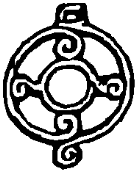

Tankut o gece, bir zamanlar eşiğinden atlamak, aptal bir partiye gelmek için can attığı, ak pak insanların dünyasına girmek için bir yıldız kapısı sandığı bu evde, Tavramina’nın yanında değil, alt kattaki salonda, büyük koltukta uyudu. Yani sözün gelişi. Yoksa sabaha kadar gözünü kırpmadı dense, yeridir. Bir gece önce Çiçek ile geçirdiği o tuhaf, iğrenç ama ister istemez zevk dolu saatler, sonra Albız’ın anlattığı öyküler iyice sinirlerini germişti. Albız’ın dudaklarını hiç kullanmaksızın aktardığı öykülerin görüntülü ve kokulu olmasının korkunç bir çekiciliği vardı. Belki yıllar sonra bunları bir film tadında ve kıvamında anacaktı ama öyküler şu anda çok canlı, çok gerçektiler.
Tengere’nin gençlik, orta yaşlılık ve yaşlılık hali, Sarkel’e ilk gittiği günkü kokusu, Selcük’ün yumuşak gri-mavi gözleri, taş duvarlı, pırıl pırıl bir Avrupa ortaçağ kalesine, yok yok bir Bizans kalesine benzeyen Sarkel, Güç Kulesi’nin kalın karanlığı, kerpiç surlu, kerpiç evli, tozlu sokaklı Müslüman kenti Cend, Salur Kazan’ın o insanın dizbağlarını çözen sarı kurt bakışı, Urus Koca Svyatoslav’ın kişisel hijyen konusundaki ilginç tutumu, savaş sahnelerindeki gerçeklik, heyecan ve korku, anlatının başından sonuna dek her aşamada bol bulamaç görülen kan, Azman atın kesik bacaklarıyla Orhon lrmağı’na dalarken çıkardığı ses, oluşturduğu görüntü, yüzlerine sıçrayan Orhon suyunun serinliği, Sarkel kırımında, dişlerine kıstırdığı sivri pembe dilini neredeyse müstehcen bir biçimde oynatan kesik kelle, o kelleden ve diğer kellelerden sızan kanın yapışkan kokusu ve daha binlerce, on binlerce görüntü ve koku kendisini uyutmuyordu. Selenge Irmağı başka, İdil başka, Ten başka kokuyordu. Ya o sonsuz, bir okyanus gibi uzanıp giden bozkır? Ah o bozkır! O bozkır!
Bunları düşünürken birden koltukta doğruldu. Bir tutarsızlık yakalamıştı. Albız madem bunları hiç dilini kullanmadan anlatabiliyordu da ilk seferinde yaptığı o numaralar neydi? Kabuklu pezevenk! Kim bilir beyin yerine kafasında dolaştırdığı süngerde kişioğluna almak için istiflediği daha ne madikler vardı... Üstelik sırf bu dili edinmek belasına başına aldığı Çiçek belası da cabası! Bu işin nasıl sonuçlanacağını, Tavramina ile evliliklerinin nereye gideceğini zihninde öteledi. İnsanın kişisel hayatı her zaman toplumsal kaygılarından sonra gelmeliydi. Evet, tabii, Albız’ın anlatısının kanlı canlı sahnelerinin bir de bugünkü toplum yaşantısına ve düzenine ilişkin getirdiği önermeler vardı. Bunları düşündü.
Düşünmez olaydı. Ayağa fırladı. Karanlıkta bir sigara yaktı. İki solukta içine çekti bitirdi. Argun Afaki ve kendisi nasıl bu kadar önemli bir şeyi atlamışlardı? Albız’ın öyküsündeki ayrıntılara takılmışlar, şurası burası demişler, fakat öykünün bütününün söylediklerini dikkate almamışlardı. Şu son yıllarda bütün enerjilerini, toplumu tereyağından kıl çeker gibi bir kolaylıkla yöneten Beyaz Türklerin gizlerini, çalışma yöntemlerini, birbirleriyle ilişkilerini, nişanlarını, düğünlerini, aldatmalarını, ölümlerini sayıp dökmeye, deşifre etmeye adamış biri zeki, öbürü çok zeki iki insanın yapacağı hata mıydı bu? Ama demek ki oluyordu. “Uy itin kesilen kellesi, vay Konguz’un memeleri” derken atlamış gitmişlerdi.
Oturmuş, isimbilimin tüm olanaklarını kullanarak, bazen de zorlayarak, bu ülkedeki açık ya da gizli Yahudi oluşumlarını, oluşum ne söz, bütün network’ü ortaya çıkarmışlardı. Yeryüzündeki son altı bağımsız Türk ve Müslüman devletten en köklüsünün halkına yapılmış, güzel, gerçekten büyük bir hizmetti bu. Sol başka, bu iş başka. İnsanın solda durması ihanet içinde olması demek değildir ki a canım! Ne der bir atasözümüz: “Asıl azmaz bal kokmaz, kokarsa ayran kokar çünkü aslı yoğurttur.” Yoğurt muyuz ulan biz? Ayrıca tarihteki Türk devletlerinin de bir sol, bir de sağ kanadı yok muydu? Tek kanatla uçulur mu? Sağ-sol, oturduk el ele verdik, halkımızı bilgiyle donattık. Halkımız artık bu bilgilerle donanmış olarak ne yapacaksa yapacaktı. Onu da Unomastik Holding mi söylesin canım, aa? Neyse, kaymayalım şimdi. Nasıldı? Hah, bilim disiplin ister! Sonra bir öğreniyoruz ki, bu ülkeye gelen Türkler, yani Selçuklular siyasi maceralarına başladıkları zaman Musevi dinindeymişler. Aralarında epey bir adam, değil Musevi olmak, sürgünlerle İsrail’den çıkarılan Yahudiler olduklarını düşünüyorlarmış!
İşte bunun anlattıkları, ima ettikleri ne müthişti! Tanrım... Olasılıklar şöyleydi:
1. Bu ülkedeki herkes Yahudi’ydi. O zaman bunlardan bazılarını deşifre etmenin ne anlamı vardı? Bir çuval elmanın elma olduğunu kanıtlamak için bazı elmaların tek tek genetik analize gönderilmesi gibi salakça bir uğraştı bu yaptıkları. Sonuçlar geldikçe deliler gibi sevinmişlerdi oysa. Zihninde, bir devlet dairesiyle hayali bir yazışma hazırladı hemen. Muhayyel bürokrasiler gerçeklerine göre çok hızlı olduğu için cevap da hemen geldi: “Tarım ve Genetik Mühendislik Bakanlığı. Sayı: TGMB.01- 13789853-2004-08-07. Konu: Gönderilen paket muhteviyatının tahlili. Sonuç: Paket muhteviyatının tahlili neticesinde gönderilen bitkisel malzemenin gülgiller familyasından malus (elma) olduğu tahakkuk etmiştir. Saygılarımla. Genetik Tahliller Masası Şef, Baş Moleküler Biyolog Uzman Dr. Bünyamin Özgür.” Kafasında bu cevabı alıp kendi daha önceki yöntemlerine ironiyle yaklaştı. Evet, müthiş bir deformasyon da söz konusuydu. Şu yukarıdaki zavallı hayali uzmana bile, Bünyamin gibi tartışmasız bir Tevrat adı ve –biraz kafa kullanmayla– Oz–gur, yani lvrit’de “güçlü aslan” demek olan Özgür gibi bir soyadı vermişti. Buna mesleki deformasyon değil de ne denecekti?
2. Bu ülkedeki bazı insanlar Yahudi değildi. Eğer Selçuklular ve dahi onlardan önceki Göktürkler Yahudi idiyseler, o zaman bugün ülkede Yahudi olmayanlar kimdi, neydi? Hani, bunlar buraya göçtüklerinde burası bomboş bir ülkeydi? Tek kelime ile korkunç! İnsan ne yapacağını bilemez valla. Türk olup Yahudi mi olsun ya da en azından, atalarının Museviliğini kabul mü etsin? Yoksa bu Yahudilik davasından toptan kurtulmak için Türklükten mi geçsin?
3. En iyisi, var olan durumun korunması olurdu. Türkler, tarihlerinin her döneminde Türk ve Müslüman, veya Müslümanlığa sağlam adımlarla yürüyen tek tanrılı insanlar, saf, temiz kalpli güzelim Şamanistler, Müslüman aday adaylarıydı. Yahudiler de Yahudi’ydi. Arada da gizli din tutan dönmeler vardı. Ne güzel, “sen sağ, ben selamet”lik bir durum. Bu sonuncu durumda Albız’ın söylediklerinin külliyen yalan olması gerekirdi. Albız, insanlara neden doğruyu söylesin ki? Tabii ki yapabildiği kadar yalan söyleyip, araya nifak tohumları ekecekti. Kerataya bak, buz gibi iftira atıyor, en azından bazı Türkleri geçmişte Yahudi dinine sokuyordu! Söylendi:
“Kim söylüyor Selçukluların, onları bırak, Hazarların Yahudi olduğunu? Albız! Sevsinler! Bana bir tane Türkün ama öyle Aktürk filan değil, adam gibi, kara yağız bir Türkün tarihin her hangi bir döneminde Yahudi olduğunu kanıtlayın, bu cuma akşamından tezi yok şabbat’a başlayayım! Peh!”
Bu son düşünceler sinirlerine iyi geldi. Şimdi okullarda okutulan tarihi kaldırıp atmanın da hiçbir anlamı yoktu. “Resmi tarih, resmi tarih” diye tefe koyup çaldıkları tarihin güzel yanları da varmış demek! Ama Argun Afaki’nin o dediklerine ne demeli?
“Ne demek Argun Abi? Huop! Evet oldukça zeki adamsın ama, ne demek Judeo-Türkik tarih? Niye oturup tarihimizi yeni baştan yazmak zorunda oluyormuşuz Albız'ın verdiği bilgiler ışığında? Huop, huop abi! Bi dakka, bi dakka, yoksa sen sebilürreşat mısın abi? Sebilürreşat, herkesin bildiği gibi, komprador demek. Bunu bir yapıtımda yeterince vurguladım sanırım. Güzel abim, sen yoksa yabancı sermayenin yerli simsarı mısın, işbirlikçi misin? Vallahi çeker indiririm, abiydi, kayınpederdi, Argun’du, etimdi, kanımdı demem, beni böyle bir şey yapmaya zorlama abi! Üpgük müyüm lan ben?”
Koltuğundan bir kez daha doğruldu. Sanki bir büyük keşif de o yapmıştı. Bir sigara daha yaktı. Filtresinden yaktığı için, uzun süre pis bir tadı içine çekmeye çalıştı. Küfrederek, yanar vaziyette, Tavramina’nın iki gün önce depremci-halıcı Güngör’den aldığı güzelim halının üstüne fırlattı. Tuhaf bir biçimde Tengere’nin sevgili tarpanı Azman’ın boz derisinin tonlarını çağrıştıran, kısa tüylü, nefis bir ipek halıydı bu... Ortasında gittikçe kararıp genişleyen deliği görünce, yine küfrederek yerinden fırladı. Koltuğun dibinde duran ayakkabılarından tekini eline geçirerek yanığın başına çöktü, ayakkabının tabanıyla, için için yanarak büyüyen halkayı ezdi, söndürdü.
Koltuğa geri döndü. Argun’u ortadan kaldırma fikriyle biraz daha oynadı. Şu an bulunduğu noktada Argun’un ölümü sanki bütün sıkıntılarını çözermiş gibi duruyordu. Büyülü bir olay olacaktı sanki Argun’un ölümü. Bilinçaltında bastırmaya çalıştığı bir düşüncenin verdiği rahatsızlıkla, Argun’u öldürmenin, vatan, millet, toplum açısından yararlarını tartıştı önce uzun süre. Evet, böylesine kaçınılmaz bir gereklilikti yani! Sonra gecenin bir saatinde, bilinçaltının derin kuyularındaki daha anlaşılır bir neden, kristal netliğinde bir gerekçe, zorlu tırmanışını bitirerek kendini yukarı çekti, çıkardı: Hayal Taşı! Hayal Taşı’nın, onu daha çok hak eden, daha iyi kullanmasını bilen ellerde olması gerekiyordu.
Evet, bu ölümü hazırlamak için kültürel altyapısı müsaitti. Kültürü bu at-avrat-pusat işlerinde tamdı. Bütün ömrü boyunca, kendi aralarında bir dayanışma ve onur duygusuyla hareket eden, birbirlerine gerektiği gibi davranan, terbiyeyi ve ağızlarını bozmayan, yerine göre “birader, abi, çocuğum” diyen, saygıda kusur etmeyen, yamuk vaziyetlerinde tabancaya asılmaktan tırsmayan, racon öyle icap ettiriyorsa silahını eski yoldaşına çevirmekten kaçınmayan, adeta sessiz bir kurt yırtıcılığında olan insanlara özenmiş, onları örnek almıştı.
Çocukluğunda “ne olacaksın yavrucum” diye soran misafir teyzelere o buz gibi gök gözleriyle bakar, “mafya babası” derdi. Kadınlar ciddiye almayıp gülüştüklerinde de yemin eder, kendi kendine söz verir, “görürsünüz siz!” derdi. Tabii ki bu çocukluk heveslerini sonradan kanalize etmiş, törpülemiş, kendini entelektüel alana kaydırarak geliştirmişti. Ama, yalan da yok, hep teşkilatçı olmuş, fedailik, silahşorluk, gizli örgütler, çeteler, komitalar, teşkilât–ı mahsusalar, bir kurtlar sofrası kültürü, bir kurt kanunu raconu hep ilgi alanı içinde kalmıştı. Yararını da görmüştü bu kültürel altyapının.
Unomastik Holding bünyesinde veya bağımsız olarak yazdığı veya derlediği yapıtlara ileri geri eleştiriler yöneltmeye cesaret edenleri nasıl pıstırırdı yoksa? Son başarılarından birini anımsadı ve o gece ilk kez hafifçe gülümsedi. Medyanın pek sivri dilli olmakla ünlenmiş köşe yazarlarından biri, yazdıklarına laf etme gafletinde bulunmuş, kendisi de hemen Secdata’nın dosyalarında mini bir araştırma yaparak, olayı usturupluca rayına sokmuştu.
“Beyfendi” demişti, “asla antisemit filan sayılmam ama sülalenizde Yahudi veya, hiç fark etmez, Ermeniler olduğunu biliyoruz. Yine de bu aşamada bunu kullanma eğiliminde değiliz!”
“Biz,” özellikle vurgulanan bir “biz” gizli öznesi vardı cümlelerinde. Kim takar tek tabanca yiğidi? Ama “biz” olunca işler değişiyordu. Hadiseyi kişiselliğin kısır çekişmelerinden çekip kurtarıyor, işe hemen kurumsal bir ciddiyet, anında örgütsel bir boyut katıyordu bu “biz.” Güçlüyüz, kalabalığız, örgütlüyüz, ortak bir bilinçle hareket ediyoruz “biz!”
“Yalnız değilim, gariban değilim, eşim dostum, tanışım bilişim, kimim kimsem var” diye açımlanabilir, “yalnız olmaktan, yalnız kalmaktan korkuyorum” diye çevrilebilirdi tabii. Çevrildi de. Tankut’un gözlerine yaşlar hücum etti.
“Bıktım ulan bu kimsesizlikten, sahipsizlikten, itilmiş kakılmışlıktan bıktım. Abi, sen de eziyorsun, piyon gibi öne sürüyorsun, sürekli zekâma hakaret, sürekli bir küçümseme... Daha ne kadar abi? Yaş geldi kırka dayandı, hâlâ yumuş oğlanı gibi koşturuyorum, bundan da bıktım abi!” diye düşündü.
Bu neredeyse onu ağlatacak, tehlikeli bir ruh haliydi, insan bir defa ağlamaya başlamayagörsün, çorap söküğü gibi sürer gider. Ağlamamak için savaşmak, mücadele etmek gerekti. Dolayısıyla züppe Sabetayist gazeteciyi nasıl pıstırdığı anısına geri döndü. Bu tip zaferlerini düşününce genelde yayılır, gevşerdi. Bugün de birazcık gevşedi. Sabah oluyor, kıştan dolayı geç de olsa, ortalık ağarıyordu. Tankut gözlerini kırptı. Yavaş yavaş, derin bir uykunun kollarına bıraktı kendini. Artık kırlaşmaya başlayan şakaklarından ter boşanıyor, nefis, beyaz bir kumaşla kaplı kanepenin yastık olarak kullandığı koluna yayılıyor. Kafasını sağa sola çevirdikçe, açıkta kalan yer biraz kuruyor, sonra yeni bir ter sağanağı ile ıslanıyordu. Düşler gördü. Hepsi tek kelimeyle korkunçtu. Bunlardan biri dışında hiçbirini sonradan hatırlamayacaktı.
O düşünde de elinde kocaman bir tabanca, tozlu, sıcak, her iki yanında yarıya kadar beyaz kireçle boyanmış kerpiç bahçe duvarlarının olduğu bir sokaktalar. Cend mi burası? Güneş, güneş! Her tarafta parlak sarı, yakan bir güneş var. Sokaklarında siyah kılıklı, yaşlı ve yaslı kadınlar dolaşıyor. Sicilya’da mıyız? Yo, yo, burası Tankut’un doğduğu ve lise sona kadar okuduğu kasabacık, Argundağ. Bahçe duvarlarının birinden olgun kayısılar yola sarkıyor, evlerden birinin penceresinden ise kayısılardan da olgun ve Tankut’tan tam üç yaş büyük Sevinç Abla sarkıyor, hani her ikisi de “kopar dalımızdan bizi Tankut” dercesine... Pencerenin kararmış tahta önünde yağ tenekesine dikilmiş bir begonya var.
İşte tam Sevinç Abla’nın pencerede olduğu bir sırada, Argun Afaki gencecik delikanlının önünde diz çökmüş, acıklı bir sesle yalvarıyor, bozkır usulünde laflar ediyor, bozlaktan güzellemeye geçiyor:
“Tankut’um, Tengere’m, bilgiye ve ışığa açılan pencerem! Etinde etim, kanında kanım var, gören gözüm, tutar elimsin, Argun’um, damadım, tiginimsin, daha nem olacaksın benim?”
Sevinç Abla, “Hatırım için vurma Tankut, bana bağışla yiğidimi” diye yırtınıp bağrınıyor. Böyle dediği için zavallı Argun’un kaderini mühürlüyor. “O ne demek lan Abla? Aranızda bir şey mi var? Ben bu mahallenin namusundan sorumlu değil miyim haa?” diyor. Sonra “daan, dan...” Argun’a değil, Sevinç’e bakıyor. Kız başörtüsünün oyalı kenarı ile ağzını utangaçça örtüp kıkır kıkır gülerken, birden yazmayı kaldırıveriyor! Oha yani! Kapasa gerçekten daha iyi olurmuş. Üç sıra halinde testere gibi dişleri var. Çüş sana abla!
Daha ne oldu düşünde, devamını göremedi. Galiba ortalığı albızlar basmıştı. Duyduğu çığlıklarla ağır uykusundan fırladı, kanepenin önündeki sehpaya çarptı. Kendini toparlayamadı ve bir kütük gibi, kiraz ağacından yapılma güzel, zarif sehpanın üstüne devrildi. Korkunç çatırtılar duyuldu. Sehpa ortasından ikiye kırıldı. Çığlıklar arttı.
Tavramina Afaki-Argun üç çocuğunu ellerinden tutmuş, birini anaokuluna diğerlerini yuvaya götürüyordu. Gördüğü manzara, zaten yılbaşından beri açıkta olan sinirlerini yay kirişi gibi gerip bıraktı. Yeni halısının üzerinde korkunç bir yanık, adeta bir kara delik vardı. Kanepede leş gibi uyuyan ve daha iyi de kokmayan Tankut’a yöneldi. Kanepenin kar gibi beyaz kolunda, iç içe geçmiş sarı-yeşil halkalar halindeki ter lekelerini görünce kendini kaybetti. Sonra olanlar oldu. Sehpa da üste gitti. Bir aile trajedisi gelişiyor, yaprakları güneş altında kızıl konca bir gül gibi kat kat açılıyordu.
“Lütfen Tavra! Çocuklarımızın önündeyiz. Rica ediyorum” gibi akıllı uslu, serinkanlı bir cümle, başka zaman ve yerde olsa belki hayat kurtarırdı. Ama Tavramina’nın tek bir kelime bile işitecek hali yoktu. Avazı çıktığı kadar bağırdı:
“Çocuklarımız mı? Her birinin babası başka onların! Nereden senin çocukların oluyorlarmış! Pis herif! Defol, defol evimden!” Zavallı Tankut, başına balyozla vurmuşlar gibi sendeledi. Duyduklarının doğru olmaması için, hâlâ düş görüyor olmak için dualar etti. Yok, gerçekti. Kanepeye çöktü. Çatlayan başını ellerinin arasına aldı. Tavra’ya baktı. Kadın da darbenin pek güçlü olduğunu anlamış, biraz şaşırmış bir yüzle kendisine bakıyordu.
“Sen... sen ne dedin?” diye kekeleyen Tankut’a, tane tane, ağır ağır konuşarak,
“Özür dilerim, öyle demek istemedim!” dedi. Tankut kâbus bitiyor diye sevindi. Tavramina devam etti:
“Yani bir yanlış anlama olmasın... Üç çocuğumun farklı babaları yok! Şey miyiz biz? Hepsi aynı babadan tabii!...”
Yok, kâbus devam ediyordu. Tankut ne yapmak gerektiğini kestiremedi. Tavramina, güzel mavi gözleri korkudan irileşmiş üç miniği zerrece umursamadan konuşuyordu:
“Töre cinayetine kalkışacakmış gibi ne yüzüme bakıyorsun öyle? Bunu sen de biliyorsun Tankut! Eskiden bir problem yoktu da şimdi ne oldu? O bataklık çiçeğinin kolları boynuna dolanınca, Anadolu usulü bir erkeklik mi taslamaya karar verdin şimdi?”
“Ne saçmalıyorsun be? Nereden biliyormuşum?”
“Ee, tabii biliyorsun. İlk çocuğumuz altı aylık ve dört buçuk kilo olarak doğdu, gıkını bile çıkarmadın!”
“Evet ama, prematüre dedi ya doktorlar!”
Tavramina karşısındakini çileden çıkaran bir ağır tahrik kahkahası attı,
“Kibar şeyler canım, ne desinler işte?”
Tankut’un dünyası zifiri karanlık bir dünyaydı artık. Korkarak,
“Başka kim biliyor?” diye sordu.
“Ee, haliyle annem babam, çocukların babası ve birkaç yakın arkadaş!”
Biraz abuk olduğunu kestirmesine rağmen bir soru daha sordu:
“Nasıl oluyor da hepsi bana benziyor?”
“İlahi, hep anlayışın kıttı ve kıt kalacak senin! Sana niye benzesinler? Bana benziyorlar. Oğlan anaya, kız babaya demişler... Eh, senin de bir Argun olmandan dolayı, etnik sınırlar içinde kalan bazı benzerlikler var tabii, abartmayalım lütfen!”
Tavramina’nın sorulmasını beklediği son soruyu sormadan kendini dışarı attı.
Bir daha asla ayak basmayacağını çok iyi bildiği evden, mont ceketini alarak çıktı. Tabii ki arabasını almadı. Sakinleşmesi gerekiyordu. Yürüyerek sahile indi. Bir simit satın aldı. Bebek’e doğru yürürken hem kuru simidi kemiriyor hem de ne yapacağım düşünüyordu. Demek Argun Afaki bu rezaleti biliyor, içine sindiriyor, kendisini de bir tür perde olarak kullanıyordu. Saatine baktı. Henüz dokuz bile değildi. Afaki işe gelmemiş olabilirdi. Hem biraz düşünmek, vakit kazanmak hem de temizlenmek dürtüsüyle, Küçük Bebek caddesinde bir saunaya girdi. Saunanın buharları arasında neredeyse uyumak üzereyken “O Sevinç Abla değil, Albız’dı” diye düşündü. Bir saat kadar sonra, tertemiz, yanakları pembeleşmiş bir şekilde dışarı çıktı. Başka zaman olsa hayatın ne güzel olduğunu düşünürdü. Zaten böyle her şeyin iyi yanına baka baka, problemleri çöze çöze, bu Afaki ailesinin her ferdine karşı alttan ala ala bu noktaya gelmişti. Kendine, aymazlığına küfretti. Şimdi ise aklında cinayet, buhardan dolayı kanlanmış gözlerinde kan vardı. Bir bankadan, çekebileceği kadar para çekti. Bir taksiye atladı. Levent’e, işyerine yollandı. İnanılmaz bir dinginlik içindeydi.